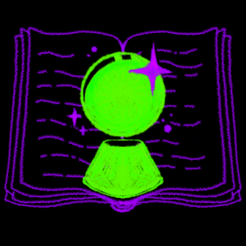
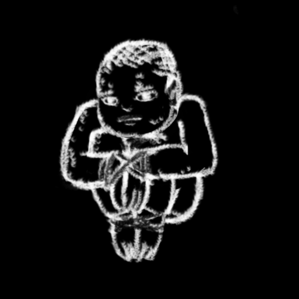
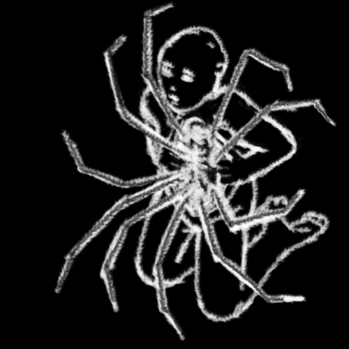
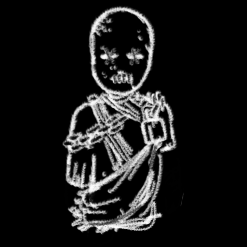

GoetIANuestro planos está plagada de elles, seres perecibles, pero a diferencia de aquellos del otro lado, dotados de vida misma.

Las Aves son individuos excepcionales que poseen el Agúll, la habilidad de ver más allá de la realidad visible. Se teoriza que su nombre proviene de su capacidad de "elevarse" sobre la percepción normal de los humanos, como si tuvieran una visión panorámica de un mundo que los demás no pueden siquiera imaginar. Estas personas son capaces de ver e interactuar con Almas, percibir las Puertas que conectan nuestro plano con La Gran División, y detectar entidades sobrenaturales como los Segadores y las criaturas que provienen de Kahil, el Inframundo.
Ser un Ave no es sólo una bendición, sino también una carga. Las Aves están en constante contacto con aspectos del mundo que otros ignoran por completo, como los monstruos y criaturas que acechan desde las sombras del otro plano. Esta percepción ampliada las convierte en guardianes involuntarios del equilibrio entre los mundos, enfrentando a menudo la soledad y el peligro que conlleva el conocimiento de lo invisible.
Debido a la naturaleza de su condición, las Aves suelen agruparse en lo que se denominan Bandadas, grupos secretos con objetivos específicos, en los que se comparte el conocimientos de lo invisible. Aunque algunas Aves eligen actuar solas, muchas encuentran en las Bandadas una comunidad que las ayuda a entender su don y a combatir los peligros que enfrentan.
Las Aves, aunque ventajosas sobre otres, son mortales, y su habilidad para ver más allá no les otorga una protección total contra las entidades que cazan en las sombras. Por esto, enfrentan no solo el peligro físico, sino también el psicológico, ya que ver más allá de lo que es natural puede corromper la mente y el espíritu.

Un fenómeno particular dentro de las Aves es el de les Recipientes, individues que han incurrido en un pacto con un Segador. Estes Recipientes han ofrecido sus cuerpos para que los Segadores puedan actuar directamente sobre Assiya, algo que por lo general, les es imposible. Este pacto no solo otorga a los Segadores un acceso más directo al mundo de los vivos, sino que también convierte al Recipientes en un mortal excepcional. La insondable bendición de aquello que habita en vacío entre los dos mundos les otorga más de alguna habilidad sobrenatural, volviéndoles de manera automática figuras de particular interés para quelles en el secreto mundo de las Aves.

Los Mundanos son personas comunes y corrientes que habitan en Assiya, sin acceso al Agúll ni a las percepciones y habilidades extraordinarias que podría ofrecer un Segador. Para elles, el mundo se presenta tal y como parece: material, estable y limitado a lo que pueden ver, oír y tocar. Sin embargo, aunque la mayoría de los Mundanos vive sin tener la más mínima noción de las fuerzas invisibles que actúan a su alrededor, hay algunes que han tenido encuentros con esas energías, de forma indirecta pero significativa.
Entre los Mundanos, existe un subgrupo especial conocido como Espejos. Estas son personas que, debido a circunstancias extremas, han sido expuestas a las energías de Kahil; ya sea por un Soplo, la exposición a una concentración muy alta de Parásitos, el encuentro con una Infección, o una experiencia cercana a la muerte. Aunque no desarrollan el Agúll, los Espejos tienen una sensibilidad especial hacia lo que ocurre más allá de lo visible, lo que puede experimentarse como sueños perturbadores y crípticos, reflejando imágenes de la energía a la que fueron expuestos. En algunos casos, estos mismos sueños pueden ser reveladores y premonitorios.